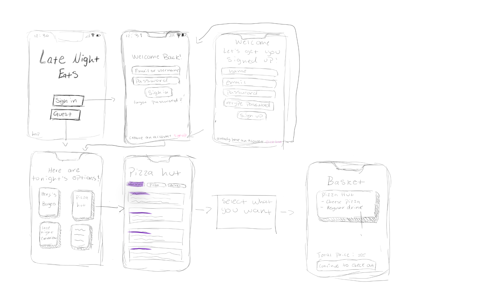

Problem Statement

This problem statement addresses the issue of students not being able to get food at later hours when coming back from extracurricular activities.
Affinity Diagram

This affinity diagram breaks down the process of creating a new dining location into 5 clusters and describes each aspect of implementation, planning, hurdles, service, and location.
Sketches
This image shows the sketches of the late night eats app which allows you to find a place to after regular dining hall locations are closed nearby.
Prototype

This video runs through how "Late Night Eats" operates and how you can find the places that are open later during night time and demonstrates placing an order.
CSCE 145 code

Java code from CSCE 145